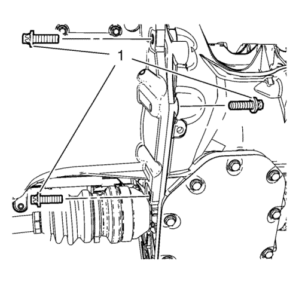
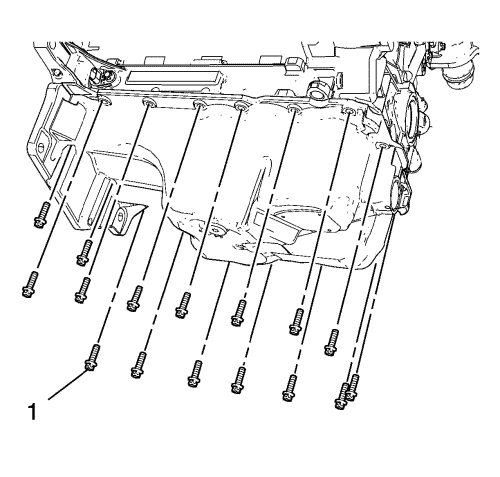
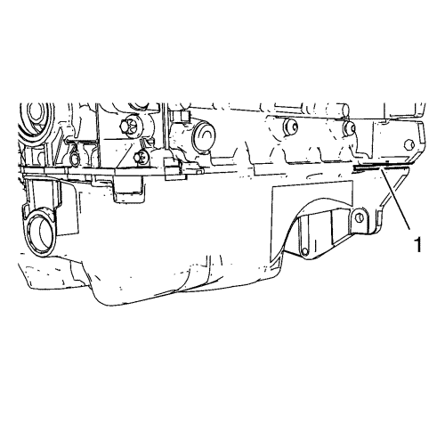
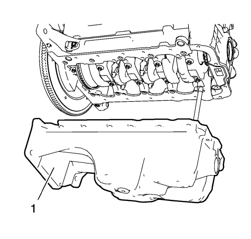
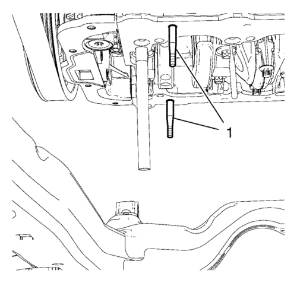
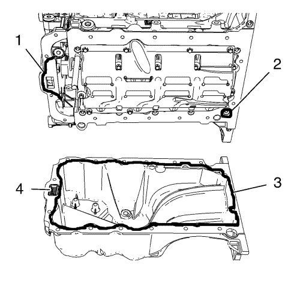
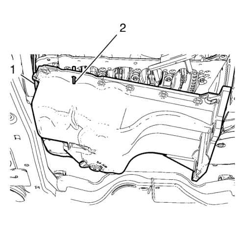

Sustitución del cárter de aceite — 1.4L LUH y LUJ
Herramientas especiales
EN-49980 Pasadores de guía
Si desea informarse sobre herramientas regionales equivalentes, consultar Herramientas especiales .
Procedimiento de desmontaje
- Abra el capó.
- Elevar el vehículo y soportarlo de manera segura. Consultar Elevación y soporte en alto del vehículo .
- Vacíe el aceite de motor. Consultar Sustitución del aceite de motor y filtro de aceite. .
- Desmonte el tubo de escape delantero. Consultar Sustitución del catalizador → 1.4L LUH y LUJ → 1.6L LXT, L2W → 1.6L LDE, LXV, 1.8L 2H0 y LUW → 2.0L Diésel LLW .
- Desmonte el catalizador de calefacción de tres vías. Consulte Sustitución del catalizador de tres vías de calentamiento → 1.4L LUH y LUJ.

- Desmonte los 3 tornillos del cambio y el cárter de aceite (1).

- Retire los 16 pernos del cárter de aceite (1).

Atención: Apalanque el cárter de aceite con cuidado para prevenir los daños a la carcasa del transeje o a las superficies de estanqueidad del cárter de aceite.
- Coloque una herramienta de palanca en la zona (1) mostrada y haga palanca suavemente en el cárter de aceite para soltarlo.

- Desmonte el cárter de aceite.
Procedimiento de montaje
- Limpie la superficie de sellado de la placa de sujeción del sombrerete del cojinete del cigüeñal y la ranura de la cubierta delantera del motor para eliminar el material de sellado viejo, el aceite, la suciedad y la grasa.
- Si el cárter de aceite está siendo reutilizado, consulte Limpieza y revisión del cárter de aceite.

- Monte los 2 pasadores EN-49980 (1) en los orificios roscados del cárter de aceite.

Nota: Consulte el catálogo de piezas electrónicas para encontrar la masilla sellante adecuada.
Nota: El cordón de sellado debe aplicarse cerca del borde interior del cárter de aceite. Procure que no entre suciedad o masilla sellante en el conducto de aspiración de aceite (4).
- Aplique masilla sellante al cárter de aceite. La capa de masilla sellante (3) debe tener un grosor de 2 mm (0,0787 pulg.).
- Aplique masilla sellante a la ranura de la cubierta delantera del motor (1).
Nota: El procedimiento de instalación del cárter de aceite debe completarse en 10 minutos.
- Aplique masilla sellante alrededor del orificio roscado (2) de la placa de sujeción del sombrerete del cigüeñal.

Atención: Tenga cuidado al montar el cárter de aceite para no romper el cordón de masilla sellante. El cordón de masilla sellante deberá mantenerse continuo hasta que el cárter de aceite quede encajado con el motor. Un cordón de masilla interrumpido puede producir una junta insuficiente, con daños al motor como resultado.
- Monte con cuidado el cárter de aceite. Use el siguiente procedimiento:
| 7.1. | Coloque el cárter de aceite sobre el bastidor de la suspensión del tren anterior y del tren de accionamiento. |
| 7.2. | Cuelgue el cárter de aceite en el dámper del cigüeñal (1). |
| 7.3. | Oriente el cárter de aceite con los 2 pasadores EN-49980 (2) y los orificios roscados equivalentes en el motor. |
| 7.4. | Sujete el cárter de aceite con 4 tornillos del cárter de aceite. |
| 7.5. | Extraiga los 2 pasadores EN-49980. |
Precaución:Consulte Precaución con las fijaciones en la sección Prólogo.
| 7.6. | Monte los otros 12 tornillos del cárter del aceite y apriételos con la mano a unos 2 N·m (18 lib. pulg.). |
| 7.7. | Coloque los 3 tornillos del cambio y el cárter de aceite (1) y apriételos a 40 N·m (30 lib. pie). |
| 7.8. | Apriete los 16 tornillos del cárter de aceite a 10 N·m (89 lib. pulg.). |
- Monte el catalizador de calefacción de tres vías. Consulte Sustitución del catalizador de tres vías de calentamiento → 1.4L LUH y LUJ.
- Monte el tubo de escape delantero. Consultar Sustitución del catalizador → 1.4L LUH y LUJ → 1.6L LXT, L2W → 1.6L LDE, LXV, 1.8L 2H0 y LUW → 2.0L Diésel LLW .
- Bajar el vehículo.
- Eche aceite de motor. Consultar Sustitución del aceite de motor y filtro de aceite. .
- Cierre el capó.
| © Copyright Chevrolet. All rights reserved |